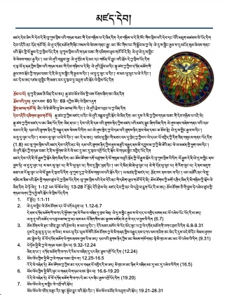
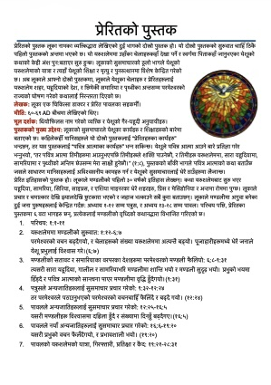

སློབ་སྦྱོང་བགྱིད་དགོས་པ
ཅི་གི་བྱས་ཏེ་གསུང་རབ་སློབ་སྦྱོང་བགྱིད་དགོས་པའི་སྐོར། གསུང་རབ་སྦྱོང་སྟངས།
གསུང་རབ་ཀྱི་དེབ་ཡེ་རེའི་སྐོར་ལེ་སློབ་སྦྱོང་བགྱིད་རྒྱུ་ལམ་སྟོན་དེ་ནི། འོག་ལེ་འོད་ཡོད་དེབ་ཐུང་དེའི་ནང་ལེ་བྲིས་ཚར་འོད། སློབ་སྦྱོང་བགྱིད་རྒྱུ་ལམ་སྟོན་དེ་ནི། གསུང་རབ་ཀྱི་རྒྱབ་སྦྱོང་གི་སྐོར་ལེ་གསལ་པོ་ཧ་གོ་ཐུབ་རྒྱུ་ཆེད་དུ། དོལ་པོ་དིང་། ཨིན་སྐད། ནེ་པལ་དེ་གསུམ་གྱི་སྐད་ནང་ལེ་བྲིས་འོད།


Study Guides
Study guides are now available for each New Testament book. Each study guide gives you the necessary background information to understand the Bible. Click the link below to download your free copy.
Study Guides →
धर्मशास्त्रा मर्गधर्शकले
धर्मशास्त्रा मर्गधर्शकले अब नयाँ नियमका हरेक पुस्तकका लागि उपलब्ध छन्। हरेक धर्मशास्त्रा मर्गधर्शकले तपाईंलाई बाइबल बुझ्न आवश्यक पृष्ठभूमि जानकारी दिन्छ। आफ्नो निःशुल्क प्रति डाउनलोड गर्न तलका लिंक क्लिक गर्नुहोस्।
धर्मशास्त्रा मर्गधर्शकले →New Testament Study Guides
Background information for each book of the New Testament in Dolpo, English, and Nepali.
Great Commandment & Commission
A commentary on two of the most important teachings from Jesus. Available in multiple language versions.